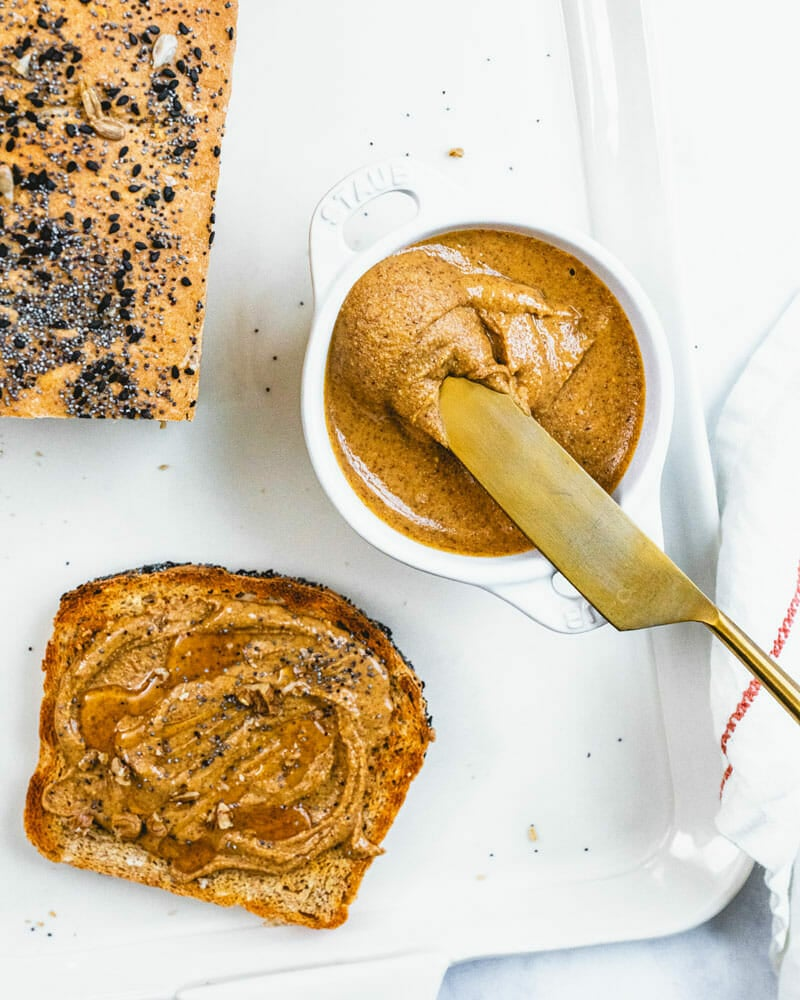

Amazing Plant-Based Breakfast Recipe Below

Document
Description
Ever made your own nut butter? Because wow, is it tasty! It’s so easy to make and saves money versus buying it at the store. Even better: you can use this recipe to use up any combination of leftover nuts in your pantry!
Anyone else have a pantry problem with little containers of different almonds and cashews or varying ages? (Yep, we do.) Here’s our solution: make homemade nut butter! It comes out seriously creamy and it’s full of plant based protein. Here’s how to make it!
Ingredients
- 2 cups raw nuts of any kind (or 1/3 each almonds, cashews and walnuts)*
- Kosher salt to taste**
- Grapeseed or canola oil, as necessary (1 tablespoon)
- Optional add in: Toasted coconut
Instructions
- Preheat the oven to 325 degrees Fahrenheit.
- Spread the nuts out onto a rimmed baking sheet. Toast for 20 to 25 minutes, until fragrant and toasted. Allow to cool 2 to 3 minutes on tray.
- Add to food processor while warm and process 4 to 12 minutes until creamy, scraping down the sides as necessary (the exact timing depends on your food processor and the age and type of the nuts). If at several minutes the nuts are very dry and crumbly, add up to a tablespoon of oil while processing.
- When creamy, add kosher salt to taste (we add ¼ teaspoon for unsalted nuts). Move the nut butter to a jar and store refrigerated for up to 4 weeks.